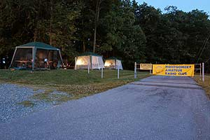

The Chief (Fred - K3CSX) says "Let's set up camp here". Set up crew Charlie, W3CRT, Fred, K3CSX, Jason, N3PRZ, and Dick, W3RHB.
Wow, that was fast. These tents just go right up don't they? Fred, K3CSX, Dick, W3RHB, and Charlie, W3CRT finish setting up tent #1
Jonathan, N0YM (standing on the chair), and friends have fun with the vertical antenna raising effort. Don't try this at home folks!
 Hey somebody stop that guy! He's getting away with our antennas! Actually
it's Ken's, N3JEY, mobile antenna farm, getting ready for prime time!
Hey somebody stop that guy! He's getting away with our antennas! Actually
it's Ken's, N3JEY, mobile antenna farm, getting ready for prime time!
Well that should take care of it. Bob, W1RD, getting it all together.
Every Club's gotta have their priorities. Let's hope there aren't any hungry cicadas around.
OK, now for the important stuff. Bring on the munchies
Geoff, AA3WZ, really comes prepared. Gee, and we thought a fire extinguisher was over the top. Is there something you are trying to tell us Geoff?
Jonathan, N0YM on the air. Looks like he may be in for an all nighter!
 Evening falls on Camp MARC. Hey, who forgot to pay the light bill?
Radio Station CQFD - Mona, NY7P plays CW into the night
June 27th has arrived and morning has broken. Hey Bill, WB3ITA, we gotta get that GOTA station on the air before field day is over.
Well folks its about time to break camp. It's clean up time. Hey ... where did everyone go?